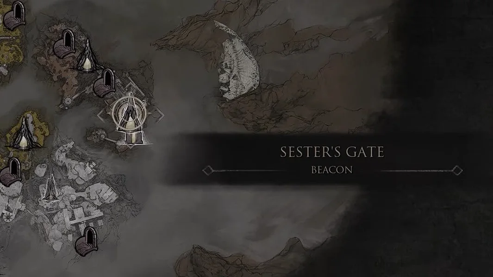
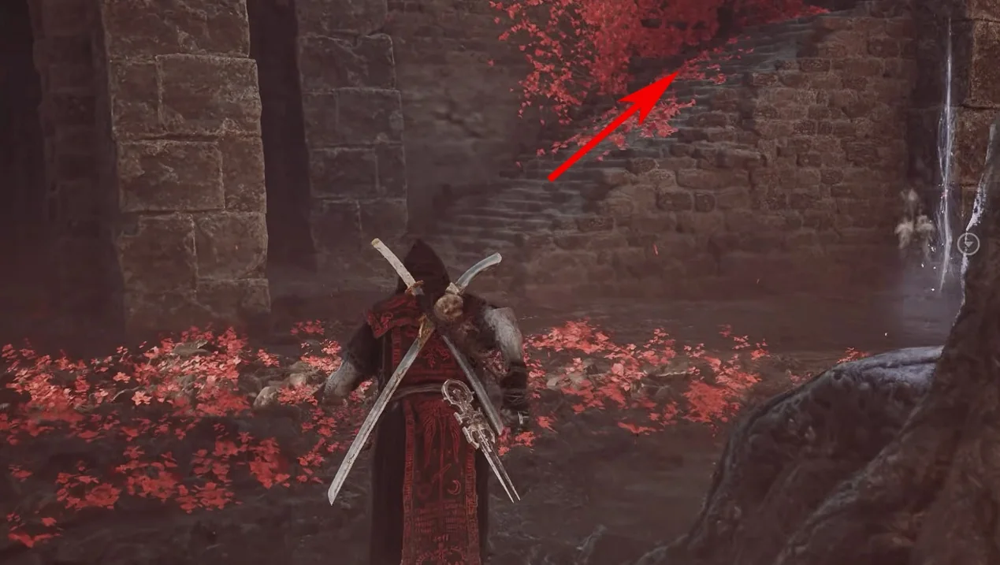
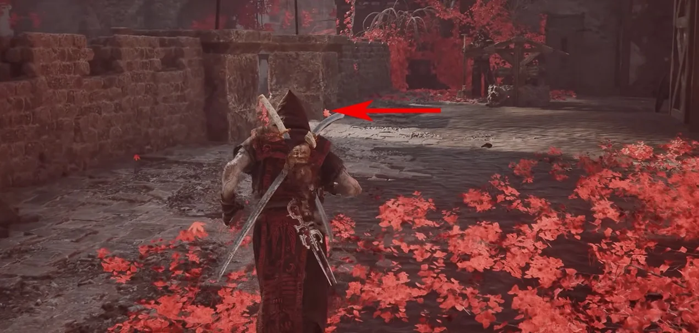
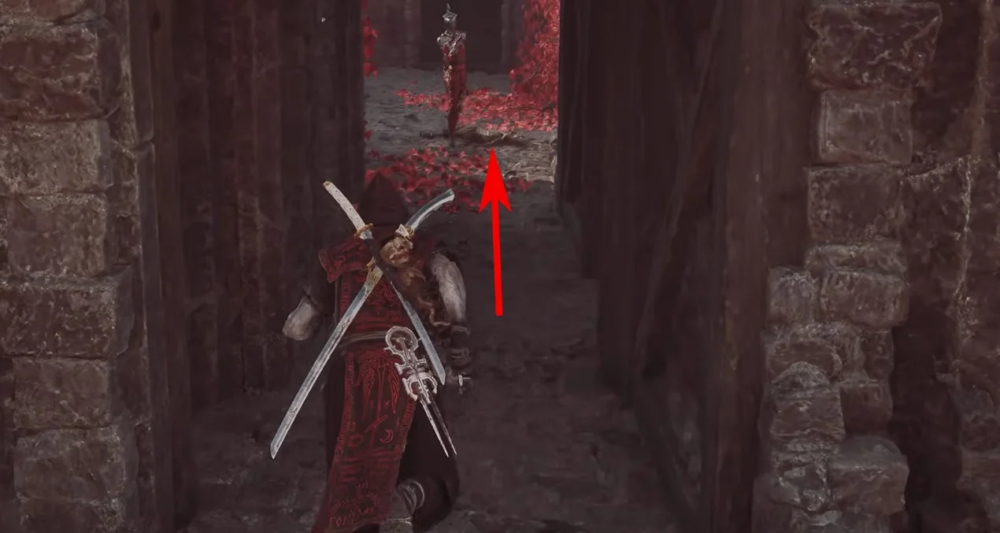
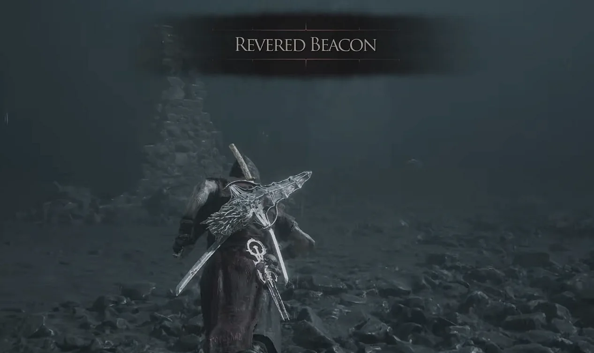
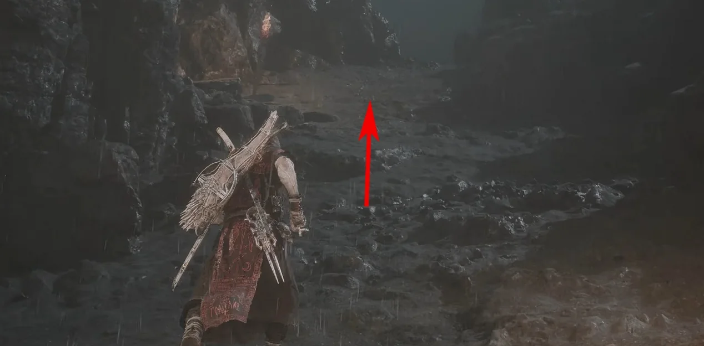
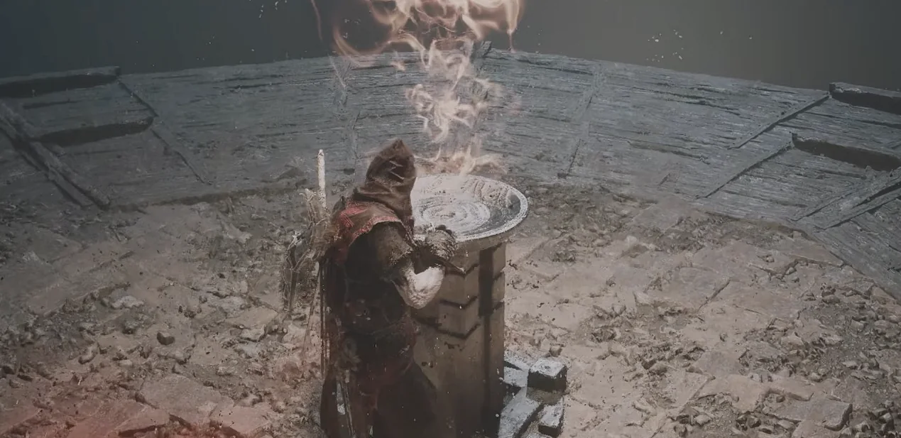
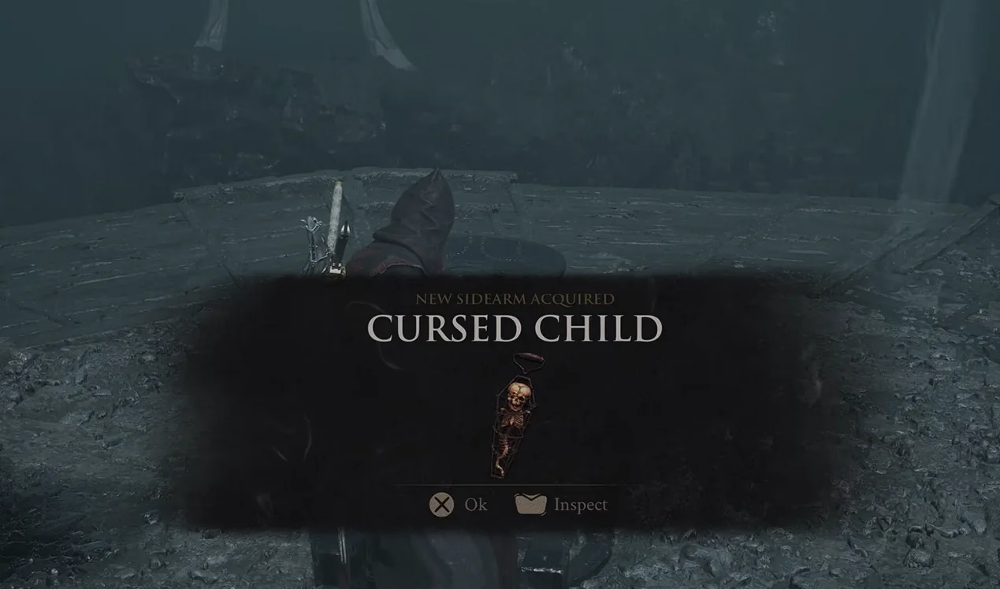

Cursed Child is awarded in the Revered Beacon area. Follow the underground route from Sester's Gate, then destroy the glowing objective to make the pickup appear.
Region
Mammon
Location
Revered Beacon
Type
Sidearm

Route 01Fast travel to Sester's Gate Beacon.

Route 02Take the staircase to the right of the Beacon and continue straight.

Route 03At the marked point, turn left and descend.

Route 04Follow the route to the lift, ride it down, and continue to the end of the passage.

Route 05You will reach Revered Beacon. Turn left and avoid the damaging light on the route.

Route 06Continue forward and use the traversal device shown by the arrow.

Route 07Destroy the glowing objective at the marked platform.

Route 08The Cursed Child pickup appears after the objective is destroyed.